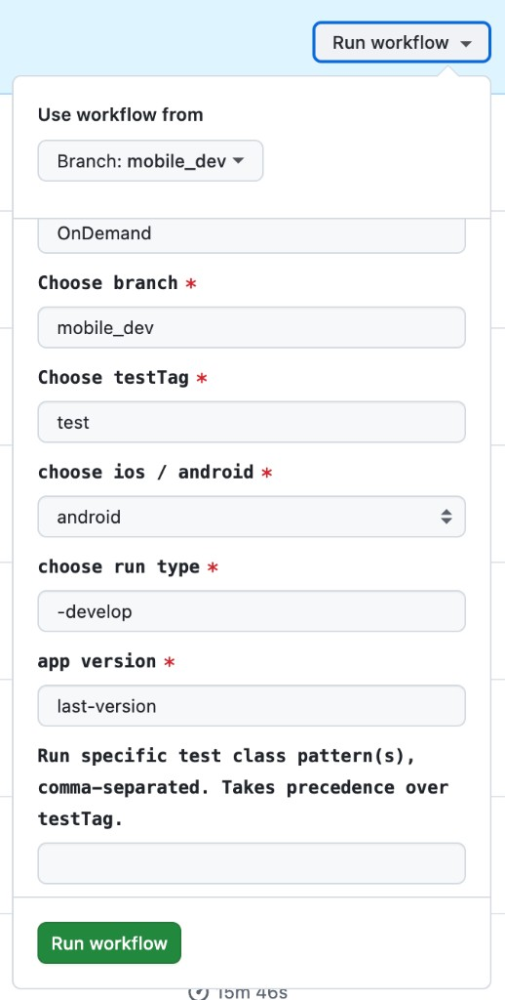

You do not need Cursor. There is no /on-demand-specific-test-run command in this guide. Use the GitHub Actions UI and normal repo search (GitHub or your IDE) to find Kotlin test class names.
Workflow:
https://github.com/digibank-il/mobile-tests/actions/workflows/run-specific-tests.yml
mobile_dev or the branch your team uses).| Field | What to put |
|---|---|
| Choose branch | The branch the run should use (often matches “Use workflow from”). |
| Choose testTag | Your team’s tag (e.g. test). If you use “Run specific test class pattern(s)” below, this tag is overridden for which tests run. |
| choose ios / android | android or ios. |
| choose run type | Your team’s value (e.g. -develop). |
| app version | Your team’s value (e.g. last-version). |
| Run specific test class pattern(s), comma-separated. Takes precedence over testTag. | This is the important field. See the next section. |
Then click the green Run workflow button.
Label in the UI:
* plus the Kotlin class name (no package, no quotes).--tests flags, Gradle task names, or file paths—only the *ClassName patterns in this field.One test class:
*DepositChequeTest
Several test classes:
*DepositChequeTest,*ToggleBiometricTest,*QuickLogInBlockedAfter5TimesTest
You need the class name (e.g. DepositChequeTest), not the human-readable test title alone.
src/test/kotlin.fun `Some test description here`()@ParameterizedTest(name = "...").kt file and find the class declaration (e.g. class DepositChequeTest).*DepositChequeTest.If you have the repo cloned, search under src/test/kotlin the same way, then read the class name from the file.
If a test uses @ParameterizedTest, multiple rows may share one class. You usually still target the class (one *ClassName entry); narrowing to a single parameter row is not guaranteed from this field alone.
android / ios).*ClassName entries, comma-separated.